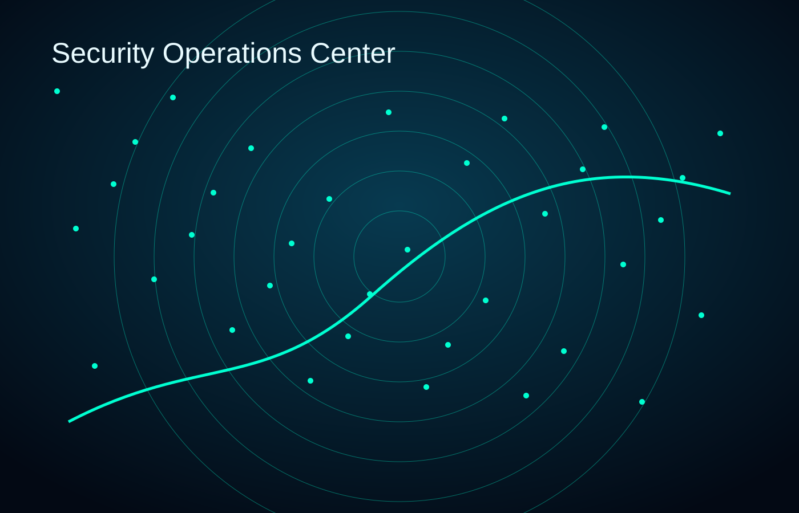

SOC
Cybersecurity
Security monitoring, SIEM support, threat detection, log analysis, vulnerability checks, and incident response planning.
Fast Tech Repair delivers cybersecurity services, server deployment, custom gaming systems, networking, CCTV, web design, and professional IT support from Newcastle upon Tyne.
Security Operations Ready
$ initializing cyber defense...
$ deploying secure infrastructure...
$ building high performance systems...
system status: protected
Built for practical business needs: secure systems, reliable networks, fast workstations, and responsive support.
Security monitoring, SIEM support, threat detection, log analysis, vulnerability checks, and incident response planning.
Linux servers, Windows systems, virtualization, storage, networking, backups, and small-business infrastructure.
Custom gaming PCs, RTX workstations, upgrades, diagnostics, thermal tuning, and clean cable-managed builds.
From endpoint troubleshooting to SIEM-style visibility, Fast Tech Repair helps homes and small businesses improve reliability and reduce security risk.

Diagnostics, repair, remote assistance, upgrades, maintenance, Windows, Linux, and macOS support.
Routers, Wi-Fi, VLAN planning, VPN setup, firewall hardening, and small business network design.
Linux servers, Proxmox, backups, storage, remote access, and reliable home or office infrastructure.
Modern business websites, WordPress improvements, GitHub Pages sites, and SEO-ready page structure.